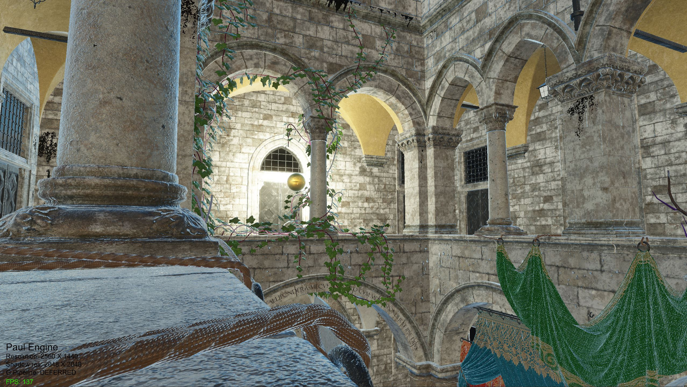
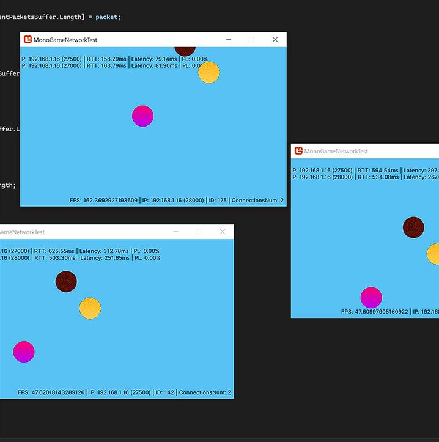
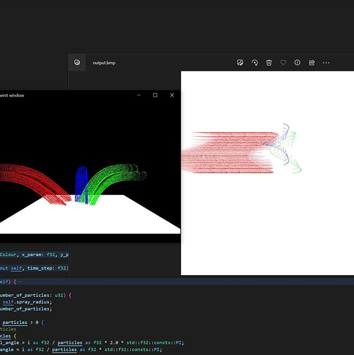
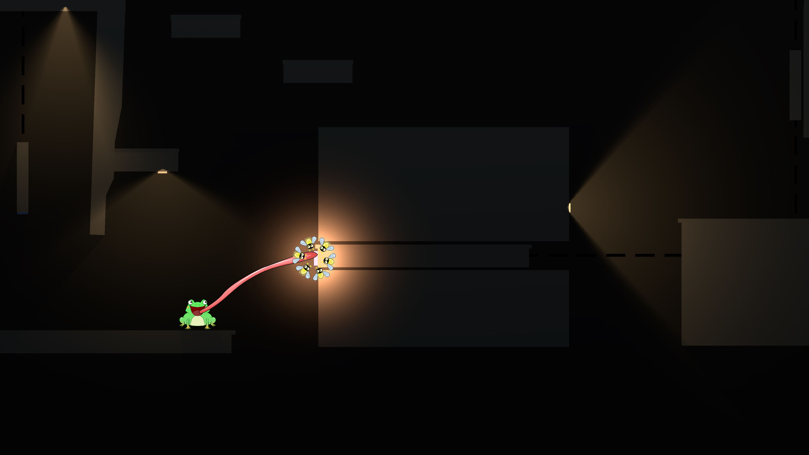

C++ Lab Book
An exploration of C++ as a language and its relationship with memory and the underlying assembly code.
I am a recent graduate from the University of Hull
I attained a first class degree in Computer Science for Games Development
Below is my work:

A custom game engine written in C++ using OpenGL. Undergoing complete re-write. Started initialliy as a port of a simple engine built in C# during university, but has since become so much more than that, far surpassing the original version.
An OpenGL, real-time path tracer built with C++ and compute shaders. Scenes can be saved and loaded to and from disk, and edited with the ImGui based editor. Adapted from the popular "Ray Tracing in One Weekend" book series.
An easy to use C# based networking library, designed initially for the MonoGame framework but with the flexibility to be used across various C# based engines, built to provide beginner game developers the tools required to build networked multiplayer games in peer-to-peer sessions. The library handles synchronisation of game objects, connection handling / management and diagnostic information. All without requiring any experience of networking from the developer.
Two implementations of an aerosol particle simulation. One in CUDA hosted in a C++ application, another in Rust. Both implementations made use of each languages threading capabilities and performance was compared.
Development of a game in a team of 4 active members. My role in the team was "Lead Programmer" and was responsible for assigning tasks to other programmers, including myself. I also designed and created the larger scale cave level and its puzzles as well as the menu, UI systems and sound design. We created "Toadm'n", a game in which you guide a toad through a 2D level and solve puzzles by controlling flies to make the toad interact with the environment.
An exploration of C++ as a language and its relationship with memory and the underlying assembly code.
OpenGL scene demonstrating different lighting techniques and knowledge of vertex buffers / vertex arrays and basic shaders.
A more advanced demonstration of shader code using the RenderMonkey application. A scene was created to showcase various rendering techniques such as height mapping and parallax mapping, as well as particle effects.
A showcase of A* and LRTA* pathfinding algorithms, allowing an agent to navigate through multiple maps of varying complexity.
A physics experimentation demonstrating various collision detections and responses, all including things like mass and velocity between moving objects with the graphics being created using HTML canvas.
Followed by a recreation of the classic Pong game
henrypaul.work@outlook.com